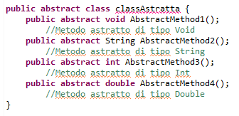

Le Développeur Java est responsable de la conception sur mesure d’applications, de sites internet ou de logiciels en langage Java, ainsi que de leurs notices d'utilisation. Il peut travailler sur des applications web, des applications de bureau, des applications mobiles ou bien encore des systèmes embarqués. Ce professionnel est généralement rattaché à un Lead Développeur, un Architecte ou un Chef de projet.
Grâce à la polyvalence du langage, le champ d’action du développeur Python couvre de nombreux domaines. Pour commencer, citons la création et l’administration d’un site web, le développement d’applications et de logiciels ou bien l’automatisation de scripts systèmes. Le développeur Python est aussi amené à gérer le développement back-end d’une application. Le choix de l’architecture, l’implémentation de l’environnement technique font alors partie de ses principales missions. Le langage Python se caractérise aussi par sa flexibilité. S’il est simple à comprendre et à apprendre, il permet de réaliser les tâches les plus complexes du Big Data, de l’intelligence artificielle et du Machine Learning grâce à de nombreux frameworks et bibliothèques. Enfin, les responsabilités du développeur Python vont au-delà de la sphère technique : il joue un rôle-clé dans la collecte, le traitement et l’analyse des données qui serviront à étayer les décisions stratégiques de l’entreprise. En termes d’organisation, le développeur Python participe aux cérémonies Agile pour donner de la visibilité en continu sur le projet. À l’instar des autres membres de l’équipe Agile, il veille à produire de la valeur en permanence pour atteindre les objectifs.
